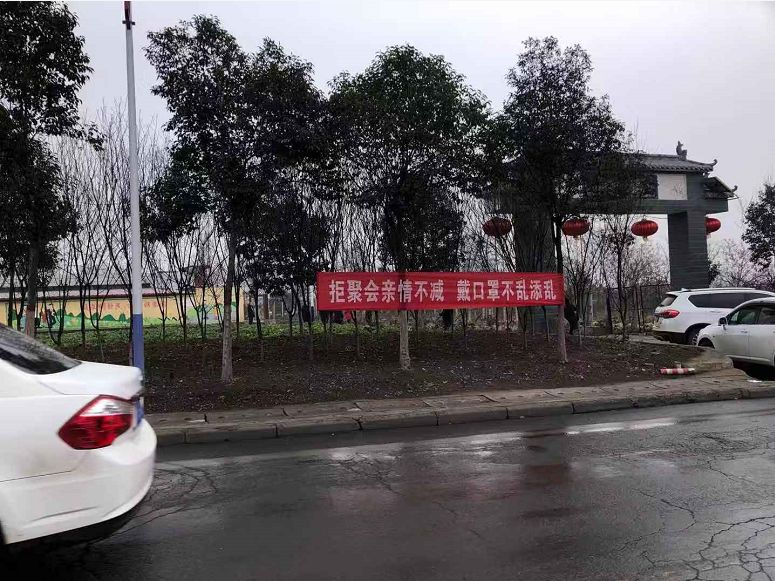
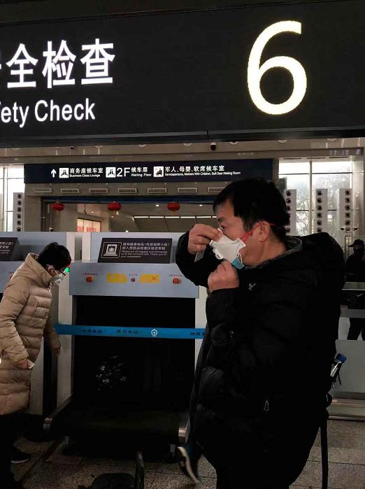

武汉之外：多地村镇缺少隔离措施、防疫宣传，县级医院物资短缺
原文链接 备份链接 以下文章来源于南方都市报 ，作者南方都市报 25日，武汉封城进入第三日。据不完全统计，湖北至少18个城市（县）已采取出入管控、限制市内交通等封城措施。 新型冠状病毒感染确诊速度迅速提高，近四日的新增病例从149人跃增 …
27.01.2020
本文字数：1285，阅读时长大约3分钟
导读：“请大家高度重视，都不要走亲串友，更不能让外人来我们村走亲戚，避免病毒交叉感染。”
作者 | 第一财经 邵海鹏
编辑 | 冯一龙
武汉疫情牵动着国人的心，“河南硬核！”、“来河南抄作业”等话题连上热搜，被众多网友们热议讨论。
这背后，是河南应对疫情的一系列“优秀”举措——近日新增130所定点医院、525家医院开设发热门诊、全面排查武汉甚至外来人口、交通要塞测体温、地铁小区消毒、暂停娱乐设施、电视直播、app短信推送、公众号推送、广播循环播放、信息轮番轰炸……
据网友爆料，在河南洛阳偃师某村从武汉打工回来的阿姨遭到全村人的叮嘱，千万不要出门。村里广播循环播放：“有在武汉的，尽量不要回来， 在哪里过年都是过年”。感受一下：
此外，还有诸多“硬核”宣传标语。

在这样的“硬核”防疫宣传工作下，甚至有网友的姥爷不让他回家了……只肯“空投”！
第一财经记者注意到，河南新密市的一个村镇群里也发起了群通知——“乡亲们大家好！接上级紧急通知，今天是正月初二，请大家高度重视，都不要走亲串友，更不能让外人来我们村走亲戚，避免病毒交叉感染。望乡亲们相互转告。”

而在群里面发布群通知的同时，村长还在群里提醒：全村十点钟以后，将全面封死所有进村路口！
新密，隶属于河南省会郑州，是其下辖县级市。1月26日，天气灰蒙蒙的，空中飘零着雪花。原本应该是走亲访友、恭贺新春的喜庆日子，然而由于疫情，几乎没有人再随意外出，更别说出门拜年。

因为要送人去高铁站，第一财经记者26日驱车前往郑州站。相较于往年此时的熙熙攘攘，今年一路上车辆、行人稀稀落落。第一财经记者沿途开车所见，跟主干道相通的村道，均设置了人为障碍，铲车或汽车横放于道路中间，不允许车辆进出。

到达高铁站，记者注意到，乘车旅客防护意识很强，也很自觉，鲜少看见不戴口罩的。在高铁站的提示大屏幕上，滚动播放着央视新闻“新型冠状病毒来了，该如何防护”的措施。
在这一天，河南省政府下发《关于加强新型冠状病毒感染的肺炎防控工作的通告》，要求切实加强社会面管理，减少公众聚集活动，立即停止存在明显交叉感染风险的公众聚集活动。
通知提到，“城乡基层组织要充分发挥大数据作用，精准管理来自武汉市等疫情发生地区的人员。”
记者也观察到，对于本地村民外出务工经商等去向，基层组织均做了严密统计，前些天有人从湖北荆门开车回家，后来失联，地方政府还专门发动群众积极找寻，就是为了进行健康登记，督促其居家或隔离医学观察14天，防止疫情输入。

一个“俺村有重兵把守”的视频，在河南老乡的群里流传颇广，拍摄者意在周知众乡亲，切断病毒传播途径，做好疫情防控工作。
在新密市政府网站上，赫然有一封《致武汉返豫老乡、武汉来豫同胞的公开信》，落款为“河南省新型冠状病毒感染的肺炎疫情联防联控指挥部”。该信倡议，“请2020年1月10日后从武汉返豫老乡、武汉来豫同胞积极协助我们做好疫情防控工作，更好地保护全省人民群众生命安全和身体健康。”
该信还为这一群体提出了三点措施：
一、居家隔离14天；
二、出现发热、咳嗽症状时，第一时间戴好口罩到省卫生健康委指定的当地定点医疗机构发热门诊规范就诊；
三、做好其他家庭成员的防护，尽量不要参与社会活动，家中不待客。
记者注意到，尽管会有不方便，村民们却鲜有微辞，对政府所采取的这些措施表示认同。村长也一直在群里提醒，解决疫情最快，成本最低的方式就是在家隔离两周，这样对经济影响最小，对生命健康最有利。“老实待在家，就是对社会的最大贡献。”
不止是基层，河南各城市的防疫宣传工作也是十分有效。河南洛阳市的姚小姐对第一财经记者表示，今年各家各户纷纷取消了登门拜年的传统习俗，就连超市里也是不戴口罩不让进。
1月24日，郑州市教育局发布了《关于加强校外培训机构防控新型冠状病毒感染肺炎工作的紧急通知》，要求即日起全面停止校外培训机构寒假期间的补课。
在同一天，银基国际旅游度假区也发布临时闭园公告，美丽乡村黄固寺民俗庙会、天爷洞风景区春节庙会都相应取消。
1月25日，新密市客运中心站也发布紧急通知，自1月26日起，客运中心站所有客运班线暂停运营，恢复时间另行通知。
红星新闻评论表示，网友晒出（河南）一些“举措”，包括前些日子运营商群发的短信，还有一些村庄对疫情的宣传，甚至有一些村庄在劝阻那些从武汉回来的人“返回”。群发短信这样看似“落后”的做法，其实是非常有效的。很多老年人不能熟练使用微信，不会注意到社交媒体的刷屏，但却会认真对待官方群发的短信提醒。防控疫情，政府需要把行之有效的措施（戴口罩、洗手）传达到每一个人那里。
评论称，相比于北上广这样的大城市，河南有数量庞大的农村人口和回乡过年人员，能在这么短时间动员到基层，说明已经有了相对比较立体的防疫体系。
你家乡是怎样防控疫情的？
欢迎留言分享你的见闻。
【推荐阅读】
UP主实拍：“空城”武汉的物价、交通 、生活状态


原文链接 备份链接 以下文章来源于南方都市报 ，作者南方都市报 25日，武汉封城进入第三日。据不完全统计，湖北至少18个城市（县）已采取出入管控、限制市内交通等封城措施。 新型冠状病毒感染确诊速度迅速提高，近四日的新增病例从149人跃增 …
原文链接 备份链接 27.01.2020本文字数：2907，阅读时长大约5分钟 导读：此次肺炎病毒毒性没有非典强但是传播力特别强，所以要想尽早恢复平安就要听从政府安排。 作者 | 第一财经 林春挺 李溯婉 每年春节前后，有许多外省车主自 …
原文链接 备份链接 【财新网】（记者 张帆）1月24日中午12点左右，作为疫情爆发中心地的湖北省姗姗启动重大突发公共卫生事件一级响应。而在此之前，从1月23日起，已有浙江、广东、湖南、北京、上海、天津、安徽、重庆、四川等多个省份启动一级 …
原文链接 备份链接 这注定是一个难捱的春节。 截至1月23日24时， 全国确诊新型肺炎病例830例， 死亡25例。 截至1月23日晚，中国新型肺炎疫情地图（来源：丁香医生） 同时，国际确诊案例也陆续出现。 截至1月23日，数据如下： 泰 …
原文链接 备份链接 几位口罩行业的从业者，都是在大量微信、电话疯狂轰炸的间歇，接受我们采访的。所有人的语速都异常急促——在过去的一周时间内，他们接过工信部、各地应急办、市级政府的电话；也接过各省医院、药店、大小代理商的电话；还有从未打过交 …